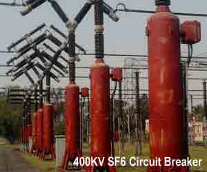
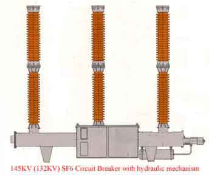
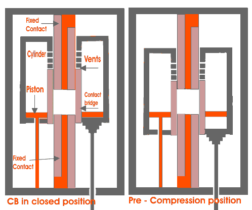
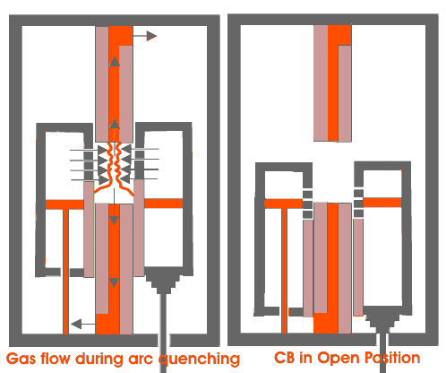

Disadvantages of SF6 CB
Types of SF6 Circuit Breaker
Working of SF6 Circuit Breaker
SF6 Circuit Breaker
A circuit breaker in which the electric current carrying contacts operate in sulphur hexafluoride or SF6 gas is known as an SF6 circuit breaker.
SF6 has excellent insulating property. SF6 has high electro-negativity. That means it has high affinity of absorbing free electron. Whenever a free electron collides with the SF6 gas molecule, it is absorbed by that gas molecule and forms a negative ion.
The attachment of electron with SF6 gas molecules may occur in two different ways,
These negative ions obviously much heavier than a free electron and therefore over all mobility of the charged particle in the SF6 gas is much less as compared other common gases. We know that mobility of charged particle is majorly responsible for conducting electric current through a gas.

Hence, for heavier and less mobile charged particles in SF6 gas, it acquires very high dielectric strength. Not only the gas has a good dielectric strength but also it has the unique property of fast recombination after the source energizing the spark is removed. The gas has also very good heat transfer property. Due to its low gaseous viscosity (because of less molecular mobility) SF6 gas can efficiently transfer heat by convection. So due to its high dielectric strength and high cooling effect SF6 gas is approximately 100 times more effective arc quenching media than air. Due to these unique properties of this gas SF6 circuit breaker is used in complete range of medium voltage and high voltage electrical power system. These circuit breakers are available for the voltage ranges from 33KV to 800KV and even more.
Disadvantages of SF6 CB
The SF6 gas is identified as a greenhouse gas, safety regulation are being introduced in many countries in order to prevent its release into atmosphere.
Puffer type design of SF6 CB needs a high mechanical energy which is almost five times greater than that of oil circuit breaker.

Types of SF6 Circuit Breaker
There are mainly three types of SF6 CB depending upon the voltage level of application-
- Single interrupter SF6 CB applied for up to 245 KV(220 KV) system.
- Two interrupter SF6 CB applied for up to 420 KV(400 KV) system.
- Four interrupter SF6 CB applied for up to 800 KV(715 KV) system.
Working of SF6 Circuit Breaker
The working of SF6 CB of first generation was quite simple it is some extent similar to air blast circuit breaker. Here SF6 gas was compressed and stored in a high pressure reservoir. During operation of SF6 circuit breaker this highly compressed gas is released through the arc in breaker and collected to relatively low pressure reservoir and then it pumped back to the high pressure reservoir for re utilize.
The working of SF6 circuit breaker is little bit different in modern time. Innovation of puffer type design makes operation of SF6 CB much easier. In buffer type design, the arc energy is utilized to develop pressure in the arcing chamber for arc quenching.


Here the breaker is filled with SF6 gas at rated pressure. There are two fixed contact fitted with a specific contact gap. A sliding cylinder bridges these to fixed contacts. The cylinder can axially slide upward and downward along the contacts. There is one stationary piston inside the cylinder which is fixed with other stationary parts of the SF6 circuit breaker, in such a way that it can not change its position during the movement of the cylinder. As the piston is fixed and cylinder is movable or sliding, the internal volume of the cylinder changes when the cylinder slides.
During opening of the breaker the cylinder moves downwards against position of the fixed piston hence the volume inside the cylinder is reduced which produces compressed SF6 gas inside the cylinder. The cylinder has numbers of side vents which were blocked by upper fixed contact body during closed position. As the cylinder move further downwards, these vent openings cross the upper fixed contact, and become unblocked and then compressed SF6 gas inside the cylinder will come out through this vents in high speed towards the arc and passes through the axial hole of the both fixed contacts. The arc is quenched during this flow of SF6 gas.
During closing of the circuit breaker, the sliding cylinder moves upwards and as the position of piston remains at fixed height, the volume of the cylinder increases which introduces low pressure inside the cylinder compared to the surrounding. Due to this pressure difference SF6 gas from surrounding will try to enter in the cylinder. The higher pressure gas will come through the axial hole of both fixed contact and enters into cylinder via vent and during this flow; the gas will quench the arc.
 by
by